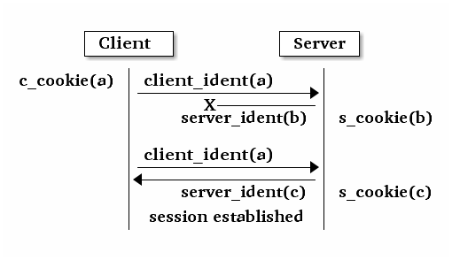
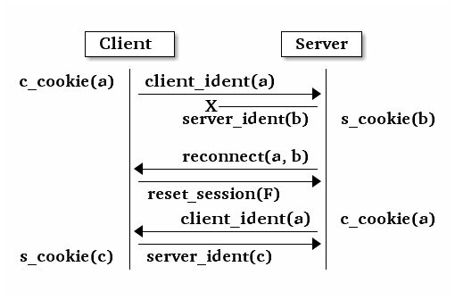
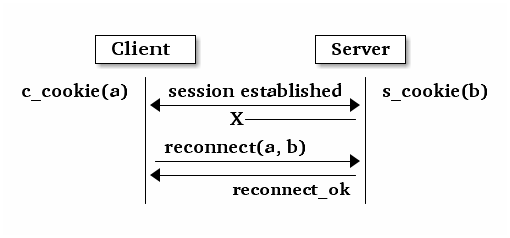
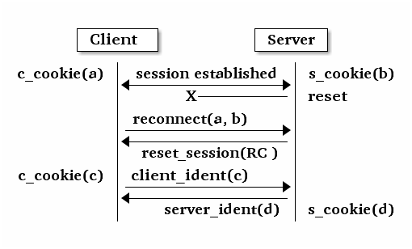
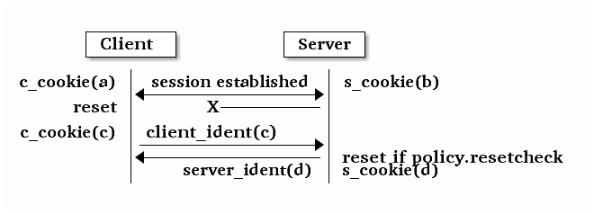

msgr2 协议¶
老的 Ceph 底层协议是用 SimpleMessenger 实现的，这个协议是它的修订版，解决了性能和安全问题。
目标¶
与最初的协议相比，这个协议修订有几个目标：
Flexible handshaking. The original protocol did not have a sufficiently flexible protocol negotiation that allows for features that were not required.
Encryption. We will incorporate encryption over the wire.
Performance. We would like to provide for protocol features (e.g., padding) that keep computation and memory copies out of the fast path where possible.
Signing. We will allow for traffic to be signed (but not necessarily encrypted). This may not be implemented in the initial version.
定义¶
client (C): the party initiating a (TCP) connection
server (S): the party accepting a (TCP) connection
connection: an instance of a (TCP) connection between two processes.
entity: a ceph entity instantiation, e.g. ‘osd.0’. each entity has one or more unique entity_addr_t’s by virtue of the ‘nonce’ field, which is typically a pid or random value.
session: a stateful session between two entities in which message exchange is ordered and lossless. A session might span multiple connections if there is an interruption (TCP connection disconnect).
frame: a discrete message sent between the peers. Each frame consists of a tag (type code), payload, and (if signing or encryption is enabled) some other fields. See below for the structure.
tag: a type code associated with a frame. The tag determines the structure of the payload.
Phases¶
A connection has four distinct phases:
banner
authentication frame exchange
message flow handshake frame exchange
message frame exchange
Banner¶
Both the client and server, upon connecting, send a banner:
"ceph %x %x\n", protocol_features_suppored, protocol_features_required
The protocol features are a new, distinct namespace. Initially no features are defined or required, so this will be “ceph 0 0n”.
If the remote party advertises required features we don’t support, we can disconnect.

帧格式¶
All further data sent or received is contained by a frame. Each frame has the form:
frame_len (le32)
tag (TAG_* le32)
frame_header_checksum (le32)
payload
[payload padding -- only present after stream auth phase]
[signature -- only present after stream auth phase]
The frame_header_checksum is over just the frame_len and tag values (8 bytes).
frame_len includes everything after the frame_len le32 up to the end of the frame (all payloads, signatures, and padding).
The payload format and length is determined by the tag.
The signature portion is only present if the authentication phase has completed (TAG_AUTH_DONE has been sent) and signatures are enabled.
Hello¶
TAG_HELLO: client->server and server->client:
__u8 entity_type entity_addr_t peer_socket_address
We immediately share our entity type and the address of the peer (which can be useful for detecting our effective IP address, especially in the presence of NAT).
Authentication¶
TAG_AUTH_REQUEST: client->server:
__le32 method; // CEPH_AUTH_{NONE, CEPHX, ...} __le32 num_preferred_modes; list<__le32> mode // CEPH_CON_MODE_* method specific payload
TAG_AUTH_BAD_METHOD server -> client: reject client-selected auth method:
__le32 method __le32 negative error result code __le32 num_methods list<__le32> allowed_methods // CEPH_AUTH_{NONE, CEPHX, ...} __le32 num_modes list<__le32> allowed_modes // CEPH_CON_MODE_*
Returns the attempted auth method, and error code (-EOPNOTSUPP if the method is unsupported), and the list of allowed authentication methods.
TAG_AUTH_REPLY_MORE: server->client:
__le32 len; method specific payload
TAG_AUTH_REQUEST_MORE: client->server:
__le32 len; method specific payload
TAG_AUTH_DONE: (server->client):
__le64 global_id __le32 connection mode // CEPH_CON_MODE_* method specific payload
The server is the one to decide authentication has completed and what the final connection mode will be.
Example of authentication phase interaction when the client uses an allowed authentication method:

Example of authentication phase interaction when the client uses a forbidden authentication method as the first attempt:

Post-auth frame format¶
The frame format is fixed (see above), but can take three different forms, depending on the AUTH_DONE flags:
If neither FLAG_SIGNED or FLAG_ENCRYPTED is specified, things are simple:
frame_len tag payload payload_padding (out to auth block_size)
The padding is some number of bytes < the auth block_size that brings the total length of the payload + payload_padding to a multiple of block_size. It does not include the frame_len or tag. Padding content can be zeros or (better) random bytes.
If FLAG_SIGNED has been specified:
frame_len tag payload payload_padding (out to auth block_size) signature (sig_size bytes)
Here the padding just makes life easier for the signature. It can be random data to add additional confounder. Note also that the signature input must include some state from the session key and the previous message.
If FLAG_ENCRYPTED has been specified:
frame_len tag { payload payload_padding (out to auth block_size) } ^ stream cipher
Note that the padding ensures that the total frame is a multiple of the auth method’s block_size so that the message can be sent out over the wire without waiting for the next frame in the stream.
Message flow handshake¶
In this phase the peers identify each other and (if desired) reconnect to an established session.
TAG_CLIENT_IDENT (client->server): identify ourselves:
__le32 num_addrs entity_addrvec_t*num_addrs entity addrs entity_addr_t target entity addr __le64 gid (numeric part of osd.0, client.123456, ...) __le64 global_seq __le64 features supported (CEPH_FEATURE_* bitmask) __le64 features required (CEPH_FEATURE_* bitmask) __le64 flags (CEPH_MSG_CONNECT_* bitmask) __le64 cookie
client will send first, server will reply with same. if this is a new session, the client and server can proceed to the message exchange.
the target addr is who the client is trying to connect to, so that the server side can close the connection if the client is talking to the wrong daemon.
type.gid (entity_name_t) is set here, by combinging the type shared in the hello frame with the gid here. this means we don’t need it in the header of every message. it also means that we can’t send messages “from” other entity_name_t’s. the current implementations set this at the top of _send_message etc so this shouldn’t break any existing functionality. implementation will likely want to mask this against what the authenticated credential allows.
cookie is the client coookie used to identify a session, and can be used to reconnect to an existing session.
we’ve dropped the ‘protocol_version’ field from msgr1
TAG_IDENT_MISSING_FEATURES (server->client): complain about a TAG_IDENT with too few features:
__le64 features we require that the peer didn't advertise
TAG_SERVER_IDENT (server->client): accept client ident and identify server:
__le32 num_addrs entity_addrvec_t*num_addrs entity addrs __le64 gid (numeric part of osd.0, client.123456, ...) __le64 global_seq __le64 features supported (CEPH_FEATURE_* bitmask) __le64 features required (CEPH_FEATURE_* bitmask) __le64 flags (CEPH_MSG_CONNECT_* bitmask) __le64 cookie
The server cookie can be used by the client if it is later disconnected and wants to reconnect and resume the session.
TAG_RECONNECT (client->server): reconnect to an established session:
__le32 num_addrs entity_addr_t * num_addrs __le64 client_cookie __le64 server_cookie __le64 global_seq __le64 connect_seq __le64 msg_seq (the last msg seq received)
TAG_RECONNECT_OK (server->client): acknowledge a reconnect attempt:
__le64 msg_seq (last msg seq received)
once the client receives this, the client can proceed to message exchange.
once the server sends this, the server can proceed to message exchange.
TAG_RECONNECT_RETRY_SESSION (server only): fail reconnect due to stale connect_seq
TAG_RECONNECT_RETRY_GLOBAL (server only): fail reconnect due to stale global_seq
TAG_RECONNECT_WAIT (server only): fail reconnect due to connect race.
Indicates that the server is already connecting to the client, and that direction should win the race. The client should wait for that connection to complete.
TAG_RESET_SESSION (server only): ask client to reset session:
__u8 full
full flag indicates whether peer should do a full reset, i.e., drop message queue.
Example of failure scenarios:
First client’s client_ident message is lost, and then client reconnects.

Server’s server_ident message is lost, and then client reconnects.

Server’s server_ident message is lost, and then server reconnects.

Connection failure after session is established, and then client reconnects.

Connection failure after session is established because server reset, and then client reconnects.

RC* means that the reset session full flag depends on the policy.resetcheck of the connection.
Connection failure after session is established because client reset, and then client reconnects.

Message exchange¶
Once a session is established, we can exchange messages.
TAG_MSG: a message:
ceph_msg_header2 front middle data_pre_padding data
- The ceph_msg_header2 is modified from ceph_msg_header:
include an ack_seq. This avoids the need for a TAG_ACK message most of the time.
remove the src field, which we now get from the message flow handshake (TAG_IDENT).
specifies the data_pre_padding length, which can be used to adjust the alignment of the data payload. (NOTE: is this is useful?)
TAG_ACK: acknowledge receipt of message(s):
__le64 seq
This is only used for stateful sessions.
TAG_KEEPALIVE2: check for connection liveness:
ceph_timespec stamp
Time stamp is local to sender.
TAG_KEEPALIVE2_ACK: reply to a keepalive2:
ceph_timestamp stamp
Time stamp is from the TAG_KEEPALIVE2 we are responding to.
TAG_CLOSE: terminate a connection
Indicates that a connection should be terminated. This is equivalent to a hangup or reset (i.e., should trigger ms_handle_reset). It isn’t strictly necessary or useful as we could just disconnect the TCP connection.
Example of protocol interaction (WIP)¶